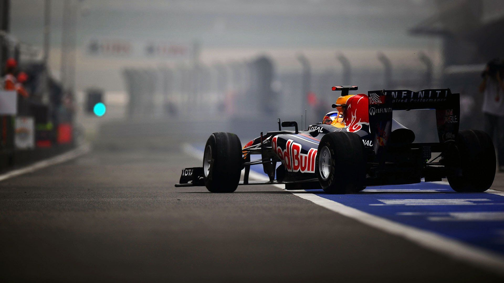

Bienvenidos
Aqui se explicara de que va la formula 1 y se selecciono este tema ya que es un deporte muy entretenido de ver en lo que
no solo importa el motor si no el equipo.

¿De que consta y que es la F1?
Es la principal competición de automovilismo internacional y el campeonato de deportes de motor más popular y prestigioso
del mundo. La entidad que la dirige es la Federación Internacional del Automóvil, o FIA. Aunque muchas veces se habla de
los pilotos de la Fórmula 1 como si fueran los únicos contendientes en este deporte, los participantes en esta categoría
son equipos, conocidos popularmente como escuderías.
¿Donde se pueden practicar?
- Pista hermanos Rodriguez mexico
- Monaco
- Singapur